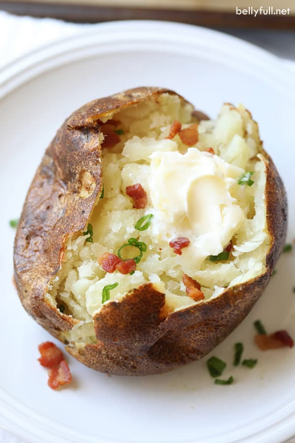

Easy Air Fryer Baked Potatoes Recipe

Description
This air fryer baked potato recipe makes tender, delicious baked potatoes with crispy,
flavorful skin. Finish them with a dollop of sour cream, if you'd like.
Ingredients
- 4 large baking potatoes, scrubbed
- 2 tablespoons olive oil
- salt
- black pepper
- ½ teaspoon garlic powder, or to taste
- ½ teaspoon dried parsley, or to taste
- 4 tablespoons butter
Steps
- Preheat an air fryer to 400 degrees F (200 degrees C).
- Rub potatoes with olive oil and season with salt, pepper,
garlic powder, and parsley. Place potatoes in the air fryer basket.
- Cook in the preheated air fryer until potatoes are soft, 40 to 50 minutes,
depending on potato size.
- Slice potatoes lengthwise. Pinch both sides of each potato,
using your hands and forcing potatoes to open, until the fluffy insides
start to come out. Add 1 tablespoon of butter into each potato.
The recipe is from here.
Click here to go back to the Homepage!